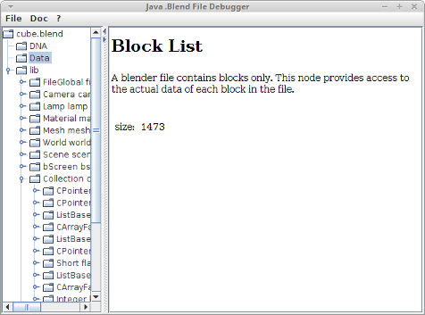

${project.title}
Debug Blender Model Files and Understand its Structure
${project.version}
GPL v3
${system.date}
Holger Machens

This application displays the content of a .blend file in terms of data structures
and associated source code documentation. It helps to analyse the data of a Blender
3D model, in order to understand its structure. It uses a
Java .Blend
DNA API to access the data (included in download).
Features
Available
- Display of File Header
- Header attributes which are displayed: File location, byte order, address width and version.
- Listing of Struct Types
- The DNA of a file is read, all struct types are listed and associated documentation can be reviewed.
- Listing of Blocks
- All blocks of a file are listed, each block in a file can be displayed with all header attributes and available documentation.
- Display of Library Content
- View its actual data in terms of data structures and their values.
- Type Casting of Pointers
- Data, referenced by void pointers can be statically casted to proper types (see folder typecasts).
Planned
- Documentation Editing
- Allow editing of the displayed source code documentation.
- Manual Type Casting
- A lot of data is referenced by void pointers. Users may want
to cast these to proper struct types manually.
Download
Licensing
This work is published under GPL v3.0.